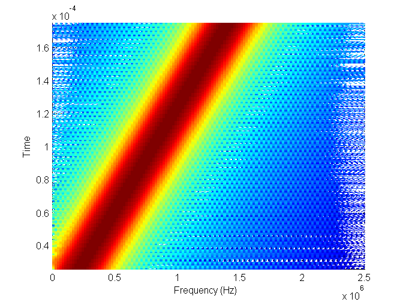
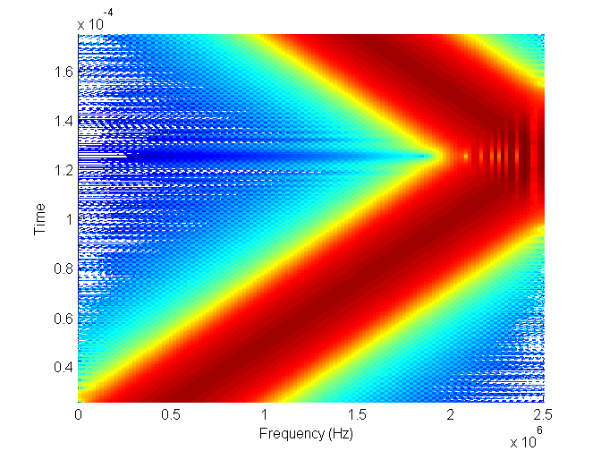
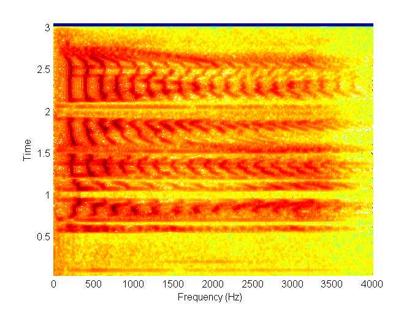
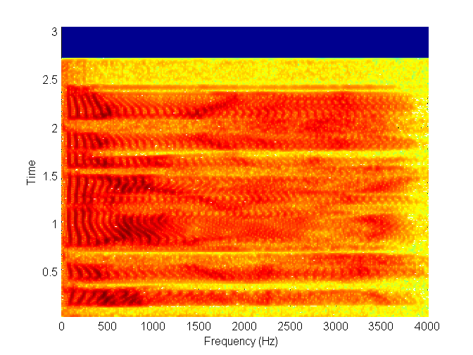
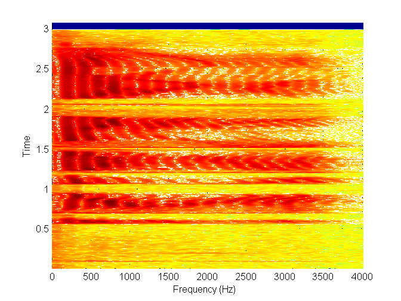
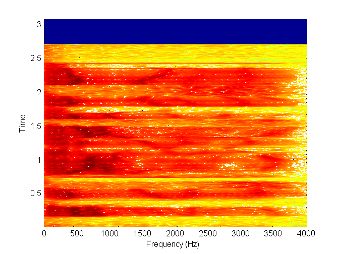
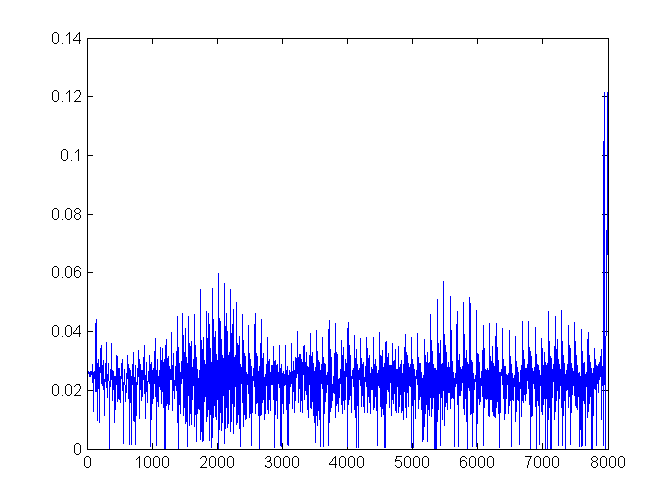
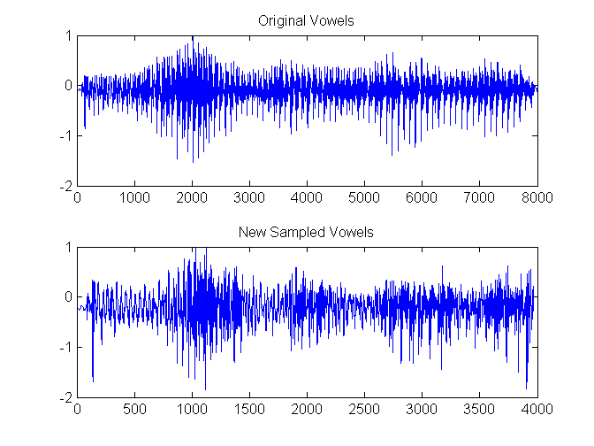

Contents
close all; clear all; clc;
load s1.mat;
load s5.mat;
load vowels.mat;
Frequency-Modulated Signals
mu = 4*10^(9);
chl = 200*10^(-6);
Fs = 5*10^(6);
Ts = 1/Fs;
t = 0:Ts:chl;
x = cos(2*pi*mu*(t.^2));
figure;
spectrogram(x,triang(256),255,256,Fs);
mu2 = 10^(10);
x2 = cos(2*pi*mu2*(t.^2));
figure;
spectrogram(x2,triang(256),255,256,Fs);
 
Narrowband and Wideband Spectrograms
Fs2 = 8000;
figure;
spectrogram(s1,triang(512),511,512,Fs2);
figure;
spectrogram(s5,triang(512),511,512,Fs2);
figure;
spectrogram(s1,triang(128),127,1024,Fs2)
figure;
spectrogram(s5,triang(128),127,1024,Fs2)
   
Modified Short-Time Fourier Transforms
x = spectrogram(vowels,rectwin(256),128,1024,8000);
g = stft(x,61);
g = g*(1/max(g));
g = padarray(g,64,'post');
soundsc(g,8000)
v = vowels*(1/max(vowels));
f = 1:8000;
diff = abs(abs(g)-abs(v));
figure;
plot(f,diff)
Fs2 = 8000;
S = spectrogram(vowels,rectwin(256),128,1024,Fs2);
for kk = 0:60
if kk == 0
X = S(:,1);
end
if mod(kk,2) == 1 && kk ~= 0
X = horzcat(X,S(:,kk+1));
end
end
n = stft(X,30);
n = n*(1/max(n));
soundsc(n,8000);
f1 = 1:8000;
f2 = 1:3968;
v = vowels*(1/max(vowels));
figure;
subplot(2,1,1)
plot(f1,v)
title('Original Vowels')
subplot(2,1,2)
plot(f2,n)
title('New Sampled Vowels')
 